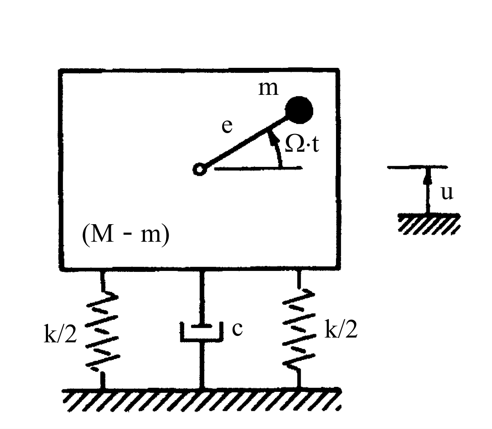
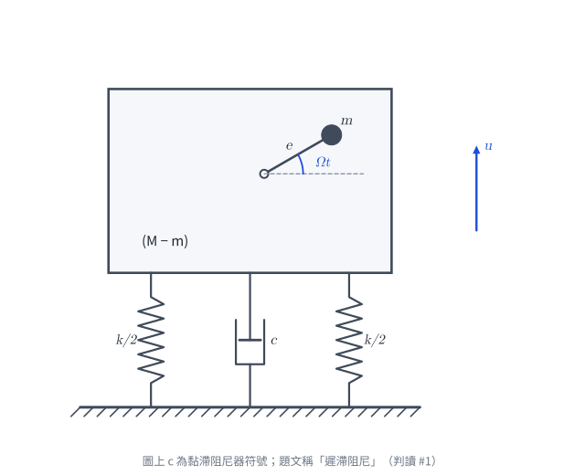
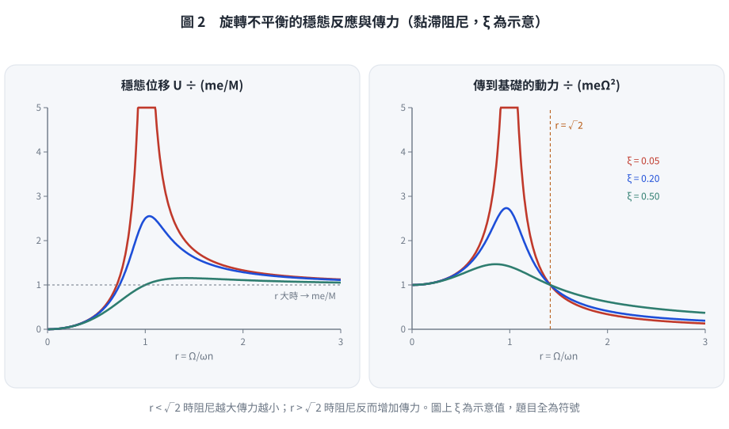

📄 題目正本：考卷原文・附圖・判讀清單（已確認）
SD-2005-4 題目正本
本檔只記錄考卷上寫了什麼、圖上畫了什麼，不含任何解法。解析見同資料夾
SD-2005-4.md。
判讀清單經使用者確認前，狀態為「待確認」；確認後本檔原則上不再修改（改動須回考卷原圖並記 log）。
| 項目 | 內容 |
|---|---|
| 考卷 | raw/exams/SD-2005_結構動力分析與耐震設計.pdf，第 1 頁（全一頁），第四題 |
| 考年 | 2005（民國94年）專技高考結構工程技師「結構動力分析與耐震設計」 |
| 配分 | 25 分（10／10／5） |
| 附圖 | SD-2005-4-fig-1.png |
| 判讀狀態 | 已確認（2026-11-15 使用者授權依 Claude 建議確認；影響答案形式項目定案：#1 主解採圖上黏滯阻尼器 c，題文「遲滯阻尼」型式於 §5 附註。原轉錄：2026-11-15 轉錄；PyMuPDF 110／150 dpi 整頁＋450–500 dpi 局部放大，PDF 文字層與向量座標核對；盲讀於開啟解析前完成） |
1. 考卷原文（逐字）
四、有一棟建築物內裝設有一馬達，其質量為 m，以 Ω rad/sec 頻率運轉，假設馬達質心有 e 之偏心，馬達與建築物之總質量為 M，相對於基礎建築物可視為剛性體，如果基礎的勁度及遲滯阻尼分別為 k 及 c。
㈠請導出垂直方向運動方程式。（10 分）
㈡請導出垂直方向穩態振動反應位移。（10 分）
㈢請計算作用於基礎之力。（5 分）
2. 考卷給的公式、附表與參數
- 考卷沒有給任何參考公式或附表。
- 符號：m（馬達質量）、Ω（rad/sec）、e（偏心）、M（馬達與建築物總質量）、k、c。
- 考卷沒有給：數值（全部以符號作答）、初始條件。
- 卷首注意事項：㈠不必抄題，作答時請將試題題號及答案依照順序寫在試卷上，於本試題紙上作答者，不予計分。㈡可以使用電子計算器，但需詳列解答過程。考試時間：2 小時。
3. 附圖

證據圖 SD-2005-4-fig-1.png
圖面文字照錄：m、e、Ω·t、(M - m)、u、k/2、c、k/2
4. 判讀清單
| # | 項目 | 判讀 | 圖上／題文依據 | 把握 |
|---|---|---|---|---|
| 1 | 阻尼型式 | 題文寫「遲滯阻尼」，圖上畫的是黏滯阻尼器（dashpot）符號、係數 c | 題文 vs 圖面 | 不確定（影響答案形式）；建議主解採圖上的黏滯阻尼 $c\dot u$，§5 附遲滯阻尼（$ic$ 或 $\eta k$）型式；使用者授權依建議確認 |
| 2 | 質量 | 方框為 $(M-m)$，加上馬達 m，總質量 M | 圖面、題文 | 確定 |
| 3 | 偏心角 | Ωt 由水平線量起（逆時針） | 圖面 | 確定 |
| 4 | 位移 u | 垂直向上為正 | 圖面右側 u 箭頭向上 | 確定 |
| 5 | 彈簧 | 兩支各 $k/2$，合計 $k$ | 圖面 | 確定 |
| 6 | 剛體 | 建築物相對基礎視為剛體（單自由度垂直運動） | 題文 | 確定 |
| 7 | 所求 | ㈠ 垂直運動方程式 ㈡ 穩態位移 ㈢ 傳到基礎的力 | 題文 | 確定 |
轉錄：2026-11-15（SD-U1-3 題目正本推廣・批 1）
確認：2026-11-15 使用者授權依 Claude 建議確認（SD-U1-3 題目正本推廣・批 1，關卡一）
考題編號：SD-2005-4
主分類： SD-U1 結構動力學基礎
副分類： SD-U1-3 單自由度系統動態分析
分析方法： SDOF 強迫振動（旋轉不平衡激振）
標籤： SDOF 旋轉不平衡 馬達振動 強迫振動 穩態反應 傳遞力 遲滯阻尼
1. 題目（考卷原文見題目正本）
考卷原文、公式／附表、附圖與判讀清單（已確認）見
SD-2005-4-problem.md。本節只列解題時最容易讀錯的地方與本解使用的記號；題意以題目正本為準。

重繪自考卷附圖，依題目正本判讀清單；本圖攔下的判讀錯誤：總質量 M 已含馬達 m；圖上 c 是黏滯阻尼器符號。
常見誤讀
| 項目 | 正確判讀 | 常見誤讀 |
|---|---|---|
| 阻尼型式 | 題文寫「遲滯阻尼」、圖上畫黏滯阻尼器 $c$；主解採黏滯 $c\dot u$，遲滯型式另於 §5 說明（判讀 #1，使用者授權依建議確認） | 只依題文或只依圖而未說明 |
| 質量 | 總質量 $M$ 已含馬達 $m$（方框標 $M-m$） | $M+m$ |
| 偏心角 | $\Omega t$ 由水平線量起；垂直分量為 $e\sin\Omega t$ | 用 $\cos$ |
| 位移 | $u$ 向上為正 | — |
本解記號： $u$ 垂直位移（向上正）；$\omega_n=\sqrt{k/M}$、$r=\Omega/\omega_n$、$\xi=c/(2M\omega_n)$。
2. 考題核心精神與出題者意圖 (Core Concepts & Examiner's Intent)
核心觀念： 旋轉不平衡（Rotating Unbalance）是機械工程與結構動力學的經典問題。馬達偏心質量 $m$ 旋轉時產生垂直向周期性力（離心力的垂直分量），激振安裝基礎，產生穩態振動。
出題者意圖：
- 測驗 Newton 第二定律推導含旋轉偏心質量的運動方程式
- 測驗 SDOF 穩態強迫振動（旋轉不平衡型激振）的解析
- 測驗傳遞力（Transmitted Force）的推導（彈簧力 + 阻尼力之向量合成）
- 注意遲滯阻尼（hysteretic damping）在穩態分析中可以等效處理的觀念
3. 解題戰略地圖與陷阱分析 (Strategic Roadmap & Trap Analysis)
作戰計畫
- 推導運動方程式： 分離「偏心質量 $m$」和「其餘質量 $M-m$」，列各自 Newton 方程後相加，消去內力
- 穩態解析： 假設 $u(t) = X\sin(\Omega t - \phi)$，代入方程求振幅 $X$ 及相位 $\phi$
- 傳遞力： 基礎受到彈簧力 $ku$ 和阻尼力 $c\dot{u}$，兩者相差 90°，取向量合成
關鍵陷阱
| 陷阱 | 說明 | 應對 |
|---|---|---|
| ① 偏心加速度方向 | 偏心質量 $m$ 的絕對加速度 = $\ddot{u} - e\Omega^2\sin\Omega t$（垂直分量） | 垂直方向：$\ddot{y}_m = \ddot{u} - e\Omega^2\sin\Omega t$ |
| ② 等效激振力方向 | 激振力 $me\Omega^2\sin\Omega t$ 出現在等號右邊（外力側） | 移項整理後：$M\ddot{u}+c\dot{u}+ku = me\Omega^2\sin\Omega t$ |
| ③ 傳遞力非僅彈簧力 | 基礎受到彈簧力＋阻尼力，兩者不同相，需向量合成 | $F_T = X\sqrt{k^2+(c\Omega)^2}$ |
| ④ 遲滯阻尼等效處理 | 本題圖示有阻尼器（dashpot），穩態分析中以等效黏滯阻尼 $c$ 代入方程即可 | 說明對穩態解無影響 |
3.5 變數層次分析 (Variable Hierarchy Analysis)
複習提示：第一次解題後，在每個卡住的知識點旁標記
⚠；第二次複習時只看有⚠的項目。
最終目標
推導運動方程式 → 求穩態位移振幅 $X$ 與相位 $\phi$ → 求傳遞至基礎的最大力 $F_T$。
本題關鍵公式（依計算順序）
$$\text{Step 1: Newton 定律} \Rightarrow M\ddot{u} + c\dot{u} + ku = me\Omega^2\sin\Omega t$$
$$\text{Step 2: 假設穩態解} \Rightarrow u(t) = X\sin(\Omega t - \phi)$$
$$\text{Step 3: 振幅} \Rightarrow X = \frac{me\Omega^2}{\sqrt{(k-M\Omega^2)^2+(c\Omega)^2}}$$
$$\text{Step 4: 相位} \Rightarrow \phi = \arctan\!\left(\frac{c\Omega}{k-M\Omega^2}\right)$$
$$\text{Step 5: 傳遞力振幅} \Rightarrow F_T = \boxed{X} \cdot \sqrt{k^2+(c\Omega)^2}$$
L1：題目直接給定
| 符號 | 說明 |
|---|---|
| $m$ | 偏心旋轉質量 |
| $e$ | 偏心距 |
| $\Omega$ | 馬達角速度（rad/s） |
| $M$ | 總系統質量（建築物＋馬達） |
| $k$ | 基礎總勁度（兩側 $k/2$ 合計） |
| $c$ | 阻尼係數 |
| $u$ | 垂直位移（待求） |
L2：需知識點推導
運動方程推導
| 符號 | 公式／來源 | 卡關? |
|---|---|---|
| $\ddot{y}_m$ | 偏心質量絕對加速度（垂直）= $\ddot{u} - e\Omega^2\sin\Omega t$ | |
| 等效激振力 | $me\Omega^2\sin\Omega t$（由 Newton 推導後移項） | |
| 運動方程 | $M\ddot{u}+c\dot{u}+ku = me\Omega^2\sin\Omega t$ |
穩態振幅與相位
| 符號 | 公式／來源 | 卡關? |
|---|---|---|
| $X$ | $me\Omega^2 / \sqrt{(k-M\Omega^2)^2+(c\Omega)^2}$ | |
| $\phi$ | $\arctan[c\Omega/(k-M\Omega^2)]$ |
傳遞力
| 符號 | 公式／來源 | 卡關? |
|---|---|---|
| $F_{spring}$ | $kX\sin(\Omega t-\phi)$（最大值 $kX$） | |
| $F_{damp}$ | $c\Omega X\cos(\Omega t-\phi)$（最大值 $c\Omega X$，與彈力差 90°） | |
| $F_T$ | $X\sqrt{k^2+(c\Omega)^2}$（向量合成） |
L3：深層知識（不懂就卡住）
| 知識點 | 說明 | 卡關? |
|---|---|---|
| 旋轉不平衡的激振力 | 偏心質量做圓周運動，垂直分量 = $me\Omega^2\sin\Omega t$（離心加速度的投影） | |
| 為何要「分離質量」推導 | 整個系統質量為 $M$，但只有 $m$ 有額外的偏心加速度；需分開列方程再合併消去內力 | |
| 傳遞力為何是向量合成 | 彈簧力∝位移（與 $u$ 同相）；阻尼力∝速度（與 $\dot{u}$ 同相，即超前 90°）→ 兩力相差 90° → 取 $\sqrt{\cdot}$ | |
| 靜力平衡位置的選取 | 靜力平衡後重力抵消，$u$ 僅表示自靜平衡位置之動態位移，$mg$ 項不出現在動態方程中 |
4. 步驟化詳細計算過程 (Step-by-Step Detailed Calculation)
(一) 推導垂直方向運動方程式
系統分解
將系統分為兩部分：
| 部分 | 質量 | 垂直位移 | 說明 |
|---|---|---|---|
| 建築物＋馬達殼體 | $M - m$ | $u(t)$ | 與基礎一起振動，位移為 $u$ |
| 馬達偏心質量 | $m$ | $y_m(t)$ | 位移 = $u + e\sin\Omega t$（偏心旋轉的垂直分量） |
偏心質量 $m$ 的垂直加速度
$$y_m = u + e\sin(\Omega t)$$
$$\ddot{y}_m = \ddot{u} - e\Omega^2\sin(\Omega t)$$
Newton 第二定律（靜平衡後的動態方程）
對 $(M-m)$ 部分（建築物殼體，受基礎彈力、阻尼力及偏心質量的內力 $N$）：
$$(M-m)\ddot{u} = -ku - c\dot{u} + N$$
對 $m$ 部分（偏心質量，受殼體對其的接觸力 $-N$）：
$$m\,\ddot{y}_m = m\left(\ddot{u} - e\Omega^2\sin\Omega t\right) = -N$$
兩式相加，消去內力 $N$：
$$(M-m)\ddot{u} + m\left(\ddot{u} - e\Omega^2\sin\Omega t\right) = -ku - c\dot{u}$$
$$M\ddot{u} - me\Omega^2\sin\Omega t = -ku - c\dot{u}$$
$$\boxed{M\ddot{u} + c\dot{u} + ku = me\Omega^2\sin(\Omega t)}$$
物理解釋： 等號右側 $me\Omega^2\sin\Omega t$ 為旋轉偏心質量在垂直方向對系統產生的等效周期激振力，頻率為馬達轉速 $\Omega$，振幅為 $me\Omega^2$（離心力）。
(二) 推導垂直方向穩態振動反應位移
使用複數法求穩態解
令 $u(t) = \text{Im}\!\left[U e^{i\Omega t}\right]$，代入運動方程：
$$\left(-M\Omega^2 + ic\Omega + k\right)U = me\Omega^2$$
$$U = \frac{me\Omega^2}{(k - M\Omega^2) + ic\Omega}$$
振幅：
$$X = |U| = \frac{me\Omega^2}{\sqrt{(k-M\Omega^2)^2 + (c\Omega)^2}}$$
相位角（位移落後激振力的相位）：
$$\phi = \arctan\!\left(\frac{c\Omega}{k - M\Omega^2}\right)$$
穩態位移反應：
$$\boxed{u_{ss}(t) = \frac{me\Omega^2}{\sqrt{(k-M\Omega^2)^2 + (c\Omega)^2}} \cdot \sin(\Omega t - \phi)}$$
其中 $\phi = \arctan\!\left(\dfrac{c\Omega}{k - M\Omega^2}\right)$
另以頻率比表示（無因次化）
定義：
$$\omega_n = \sqrt{\frac{k}{M}},\quad r = \frac{\Omega}{\omega_n},\quad \xi = \frac{c}{2M\omega_n}$$
則：
$$X = \frac{m}{M} \cdot e \cdot \frac{r^2}{\sqrt{(1-r^2)^2 + (2\xi r)^2}}$$
$$u_{ss}(t) = \frac{m}{M} \cdot e \cdot \frac{r^2}{\sqrt{(1-r^2)^2+(2\xi r)^2}} \cdot \sin(\Omega t - \phi)$$
共振條件： 當 $\Omega \to \omega_n$（即 $r \to 1$），若阻尼極小則 $X \to \infty$，須避免馬達轉速接近結構自然頻率。
(三) 計算作用於基礎之力
基礎受到兩個力：
- 彈簧恢復力：$F_k(t) = k \cdot u(t) = kX\sin(\Omega t - \phi)$（最大值 $kX$）
- 阻尼力：$F_c(t) = c\dot{u}(t) = c\Omega X\cos(\Omega t - \phi)$（最大值 $c\Omega X$）
由於 $F_k$ 與 $F_c$ 相位差 $90°$，以向量（相量）合成：
$$F_T(t) = kX\sin(\Omega t - \phi) + c\Omega X\cos(\Omega t - \phi)$$
最大傳遞力振幅：
$$\boxed{F_T = X\sqrt{k^2 + (c\Omega)^2} = \frac{me\Omega^2 \cdot \sqrt{k^2 + (c\Omega)^2}}{\sqrt{(k-M\Omega^2)^2 + (c\Omega)^2}}}$$
完整時間函數：
$$F_T(t) = F_T \cdot \sin(\Omega t - \phi + \psi)$$
其中 $\psi = \arctan\!\left(\dfrac{c\Omega}{k}\right)$（傳遞力相對位移的相位超前）
物理意義： $F_T$ 即為建築物底部基礎所受的最大動態力，工程上稱為「傳遞力（Transmitted Force）」，設計基礎時需考慮此力的影響。

圖 2 旋轉不平衡的穩態反應與傳力（$\xi$ 為示意值）。激振力 $me\Omega^2$ 隨轉速平方增加，所以 $r$ 大時位移趨近 $me/M$ 而不是 0；傳力在 $r>\sqrt2$ 時阻尼越大反而越大。
5. 關鍵爭議點與進階探討 (Critical Issues & Advanced Discussion)
1. 遲滯阻尼（Hysteretic Damping）與黏滯阻尼的比較
本題明確標示「遲滯阻尼」。嚴格處理時：
| 阻尼模型 | 運動方程 | 穩態位移 $X$ |
|---|---|---|
| 黏滯阻尼 $c$（圖中 dashpot） | $M\ddot{u}+c\dot{u}+ku = F$ | $me\Omega^2/\sqrt{(k-M\Omega^2)^2+(c\Omega)^2}$ |
| 遲滯阻尼（損失因子 $\eta$） | $M\ddot{u}+k(1+i\eta)u = F$（頻域） | $me\Omega^2/\sqrt{(k-M\Omega^2)^2+(\eta k)^2}$ |
若題目的 $c$ 即為遲滯阻尼中的損失因子（$\eta = c$，無因次），則：
$$X_{\rm hysteretic} = \frac{me\Omega^2}{\sqrt{(k-M\Omega^2)^2 + (ck)^2}}$$
$$F_T^{\rm hysteretic} = X \cdot k\sqrt{1+c^2}$$
考場建議： 圖示顯示 dashpot，故採黏滯阻尼公式較為安全。若要討論遲滯阻尼，可在答題後補充說明兩種模型的差異。
2. 靜力項的處理
推導時已默認以靜力平衡位置為 $u = 0$ 的基準，因此重力 $Mg$ 與彈簧靜力平衡後相消，動態方程中不含重力項。這是結構動力學的標準處理方式。
3. 工程應用
- 隔振設計： 選擇合適的 $k$，使 $\omega_n \ll \Omega$（$r \gg 1$），傳遞率 $T_R = F_T/(me\Omega^2) < 1$，即可達到隔振效果
- 共振迴避： 啟動/停機過程中馬達轉速掃過 $\omega_n$，需快速通過或加大阻尼
- 遲滯阻尼 在土壤或橡膠隔振墊中是真實存在的非線性阻尼型式，通常以頻率無關的損失因子 $\eta$ 建模
4. 考場建議
- 子題（一）的關鍵在「分離質量、合併方程、消去內力」這三步，需清楚寫出各部分的 Newton 方程
- 子題（二）複數法最快，也可用「待定係數法」設 $u = A\sin\Omega t + B\cos\Omega t$ 代入求 $A, B$ 再合成
- 子題（三）的向量合成是高頻考點：$F_k \perp F_c$，故 $F_T = \sqrt{F_k^2 + F_c^2}$，不可直接相加
修正日期：2026-11-15（§1 改為指向題目正本，重繪附圖 figs/SD-2005-4-fig-1-problem.svg）
圖解補繪：2026-11-15（向量圖，腳本 gen_SD-2005-4.py，可重跑；非勘誤、答案不變）